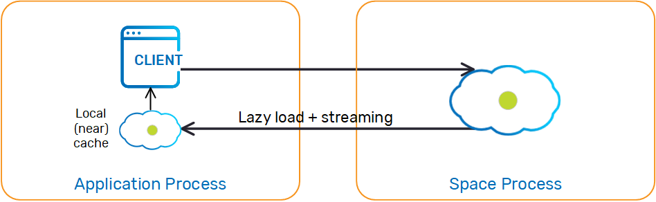
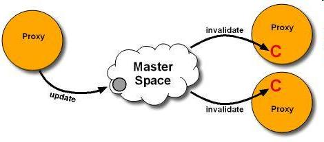
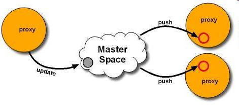

A Local Cache is a client-side cache that maintains a subset of the master Space's data based on the client application's recent activity. The local cache is created empty, and whenever the client application executes a query the local cache first tries to fulfill it from the cache, otherwise it executes it on the master Space and caches the result locally for future queries.

Creating a local cache is similar to creating a GigaSpace, except that we wrap the Space with a local cache before handing it to the GigaSpace. The local cache can be configured at design time using LocalCacheSpaceFactoryBean, or at runtime using LocalCacheSpaceConfigurer. For example:
<os-core:space-proxy id="space" space-name="mySpace"/>
<os-core:local-cache id="localCacheSpace" space="space">
<os-core:properties>
<props>
<prop key="space-config.engine.cache_size">5000000</prop>
<prop key="space-config.engine.memory_usage.high_watermark_percentage">75</prop>
<prop key="space-config.engine.memory_usage.write_only_block_percentage">73</prop>
<prop key="space-config.engine.memory_usage.write_only_check_percentage">71</prop>
<prop key="space-config.engine.memory_usage.low_watermark_percentage">50</prop>
<prop key="space-config.engine.memory_usage.eviction_batch_size">1000</prop>
<prop key="space-config.engine.memory_usage.retry_count">20</prop>
<prop key="space-config.engine.memory_usage.explicit">false</prop>
<prop key="space-config.engine.memory_usage.retry_yield_time">200</prop>
</props>
</os-core:properties>
</os-core:local-cache>
<os-core:giga-space id="localCache" space="localCacheSpace"/>
<bean id="space" class="org.openspaces.core.space.SpaceProxyFactoryBean">
<property name="name" value="space" />
</bean>
<bean id="localCacheSpace"
class="org.openspaces.core.space.cache.LocalCacheSpaceFactoryBean">
<property name="space" ref="space" />
</bean>
// Initialize remote space configurer:
SpaceProxyConfigurer urlConfigurer = new SpaceProxyConfigurer("mySpace");
// Initialize local cache configurer
LocalCacheSpaceConfigurer localCacheConfigurer =
new LocalCacheSpaceConfigurer(urlConfigurer);
// Create local cache:
GigaSpace localCache = new GigaSpaceConfigurer(localCacheConfigurer).gigaSpace();
Transactional operations are always executed on the master Space.
The local cache uses the entry's version to determine whether the local entry is up-to-date or stale when handling updates. Usually this mechanism is transparent to the user and does not require declaring a version property, because the master Space and local cache maintain version information implicitly for each entry.
The exception is a master Space with Space persistency enabled. For example, suppose that an entry in the master Space has version 7, and gets stored in the local cache, then evicted from the master Space and later reloaded from the data source. If the version is not persisted and reloaded, it will be set to 1 and the local cache will ignore upcoming updates on that entry because its cached version is 7. In that case, it is the user's responsibility to make sure that the entry's version is persisted and loaded in the data source, using the following rules:
Each POJO class should declare a SpaceVersion property.
In the database, you should add a VERSION_ID column that will be mapped to this property in the corresponding tables. If you are using Hibernate, add the versionId property to the hbm.xml file or the @Version annotation to the mapped class.
When writing new entries to the Space, it is recommended to use version 0 and let the Space implicitly initialize to version 1.
When using template matching to query the Space, make sure that the template used has the version ID field set to ZERO to make sure the Space will ignore it.
Running multiple local cache instances (for different master Spaces) within the same client may cause problems unless you allocate reasonable headroom for the local cache to operate. Such issues will be manifested in MemoryShortageException being thrown sporadically.
The main reason is the interdependency each cache has on the other caches' utilized memory. Since the MemoryShortageException is thrown when the virtual machine's total utilized memory is above a threshold (and not when a specific cache's utilized memory is above a given threshold), an over-utilized cache may impact other caches running within the same client.
The recommended approach to ensure a deterministic behavior is to limit the local cache size (the default size is very large and may not be appropriate for all situations).
Example
Client X uses two local cache instances, LC1 for master space A, with the local cache containing 100,000 objects, and LC2 for master space B, with the local cache containing 100 objects. An external client (client Y) writes data to Space A. LC1 receives these updates automatically (via notifications). At some point, other clients write data to Space B. LC2 is also updated with these objects.
If client X's JVM's available memory breaches the write_only_block_percentage threshold, and the client tries to read 1000 objects from Space B that were not cached in LC2, existing LC2 objects will be evicted to clear some memory for the loaded objects.
There are only 100 objects to clear from LC2, therefore not all of the 1000 objects that are read from Space B will be loaded into LC2. A MemoryShortageException might be thrown in this case if the client tries to perform rapid and repeated reads from Space B.
The local cache is checked. If the requested object is found in the local cache, it is returned back to the application.
Otherwise, the master Space is queried.
If the object is found within the master Space, the object is stored within the local cache and returned back to the application.
Blocking Read - read with timeout first checks the local cache (without blocking - i.e. timeout=0), and if requested object is not found, the master Space is checked.
The local cache is checked. If all the requested objects are found within the local cache (based on the amount of the maxObjects parameter of the readMultiple call), they are returned back to the application.
Otherwise, the master Space is queried.
All relevant matching objects are stored into the local cache and returned back to the application.
To avoid a readMultiple call from the master Space, make sure you do not use Integer.MAX_VALUE as the max_objects value.
Take is always executed on both the local Space and the master Space. Blocking Take (take with timeout > 0) will block until an object is available on the master Space, just like a regular take operation.
Writes are always executed on the master Space. Updates are executed both on the master Space and the local cache, to make sure the cache is consistent if the object is cached.
A Transactional object update updates the object in the master Space. It also removes any old copies from the local cache. This is done to provide transactional consistency. After a transaction is committed, the data is updated within the local cache according to the update policy.
Each change on the master Space triggers a notification at the local cache. The change is processed according to one of the following update policies:
Pull - When the local cache is notified about an update, it removes the stale object from the local cache (invalidation). The next time the client tries to read the object, it will be reloaded from the master Space and stored in the local cache.

Push - When the local cache is notified about an update, it loads the recent copy of the object from the master Space and "pushes' it into the local cache. The next time the client tries to read the object, it will be returned from the local cache without accessing the master Space.

None - Do not register for master Space updates - If an object is changed in the master Space, it will remain stale in the local cache until its lease expires.Only actual object changes in the master Space are propagated to the cache - update and take. Object evictions or reloads from the data source do not update the local cache.
When the local cache updates the cached object (i.e. PUSH policy), it creates a new object with the relevant data and updates the cache with the new reference. If an application is holding a reference to the previous object it will not be changed; to get the changes, the application should read it again from the local cache.
Push is usually recommended for applications that perform more reads than updates (when reducing cache misses is important), whereas Pull is usually recommended for applications that perform more updates than reads (when protecting the cache from multiple updates is important and cache misses are acceptable).
The update policy can be configured using LocalCacheSpaceFactoryBean for Spring, or using LocalCacheSpaceConfigurer at runtime. The default update policy is "pull." For example:
<os-core:local-cache id="localCacheSpace" space="space" update-mode="PULL"/>
Changes in the server are grouped and sent to the client in batches. The following configuration settings control synchronization batching:
Batch Size - When the batch size reaches the configured value, the batch is sent to the client. The default is 1000 objects in a batch.
Batch timeout - When the oldest event in the batch reaches the configured value, the batch is sent to the client. The default is 100 milliseconds.
Setting lower values for batch size and timeout will reduce data staleness but increase network load, and vice versa.
Batch settings can be configured using LocalCacheSpaceFactoryBean for Spring, or using LocalCacheSpaceConfigurer at runtime. For example:
<os-core:local-cache id="localCacheSpace" space="space"
batch-size="1000" batch-timeout="100"/>
When the connection between a local cache and remote master space is disrupted, the local cache starts trying to reconnect with the remote space. If the disconnection duration exceeds the maximum disconnection duration, the local cache enters a disconnected state, wherein each operation throws an exception stating the cache is disconnected. When the connection to the remote master space is restored, the local cache restarts with an empty cache (same as in the initialization process) before restoring the state to connected, ensuring the cache does not contain stale data after reconnection.
The maximum disconnection duration can be configured using LocalCacheSpaceFactoryBean for Spring, or using LocalCacheSpaceConfigurer at runtime (default is one minute, or 60000 milliseconds). For example:
<!-- duration time is given in milliseconds -->
<os-core:local-cache id="localCacheSpace"
space="space" max-disconnection-duration="60000"/>
The round-trip-time setting can be configured using the space-config.dist-cache.events.lease-renew.round-trip-time custom property. For more information about this setting refer to Session-Based Messaging API.
When using a local cache with GigaSpace, the cache policy is set to LRU and cannot be changed. When using the local cache with GigaMap, the default cache policy is com.j_spaces.map.eviction.FIFOEvictionStrategy, and other policies may be used by setting the space-config.dist-cache.eviction-strategy custom property. For more details refer to the Map API.
In order to properly configure the local cache eviction mechanism, you should consider tuning the following configuration elements:
| Parameter | Suggested Value |
|---|---|
| space-config.engine.cache_size | 5000000 |
| space-config.engine.memory_usage.high_watermark_percentage | 75 |
| space-config.engine.memory_usage.write_only_block_percentage | 73 |
| space-config.engine.memory_usage.write_only_check_percentage | 71 |
| space-config.engine.memory_usage.low_watermark_percentage | 50 |
| space-config.engine.memory_usage.eviction_batch_size | 1000 |
| space-config.engine.memory_usage.retry_count | 20 |
| space-config.engine.memory_usage.explicit-gc | false |
| space-config.engine.memory_usage.retry_yield_time | 100 |
See the Memory Management Facilities for additional details on these configuration properties.
Having the property space-config.engine.memory_usage.explicit-gc set to enabled is recommended only in extreme cases where there is high load on the system, with a large amount of concurrent users accessing the local cache and when the amount of CPUs/cores is relatively small.
There might be cases when the local cache cannot evict its data quickly enough. This will result in an exception thrown on the client side. Reasons for this behavior include very large objects stored within the local cache, large numbers of concurrent access to the local cache, or a relatively small JVM heap. In this case a RemoteException will be thrown.
You should catch this Exception and check its cause. If the cause is MemoryShortageException, you should invoke sleep for a short time and let the client JVM release the evicted memory and retry the operation. See the following example:
GigaSpace gigaspace;
while(true)
{
try
{
Object obj = gigaspace.read(template);
break;
} catch (Exception e){
if (e.getCause() instanceof MemoryShortageException)
Thread.sleep(1000);
}
}
The Client Local Cache eviction can be monitored by setting the client application com.gigaspaces.core.memorymanager logging entry level to FINE. When changed, log entries will be displayed when objects are evicted from the local cache (starting, during, and when completing the eviction cycle), and when waiting for incoming activities.
The logging level of com.gigaspaces.core.memorymanager can be changed while the client application is running using JConsole.
Below is the result of a simple benchmark comparing Ehcache's get() operation with the local cache using the GigaSpace.readById() operation. With this benchmark, the local cache/ehcache size can accommodate the entire data set for the application.
| Property | Description | Default Value | Unit |
|---|---|---|---|
| max-disconnection-duration | If the duration of the local cache disconnection exceeds this value, the local cache enters a disconnected state, where each operation throws an exception stating the cache is disconnected. | 60000 | milliseconds |
| batch-size | When the batch size reaches this value, the batch is sent to the client. | 1000 | operations |
| batch-timeout | When the oldest event in the batch reaches this value, the batch is sent to the client. | 100 | milliseconds |
| update-mode | Local cache update mode. Options are PULL, PUSH, None. |
PULL | |
| max-time-to-live | Time to live for objects within the local cache. | 300000 | milliseconds |
When a local cache contains complex objects (nested structure), it is recommended to perform a deep clone once these have been read to allow incoming updates to refresh the state of the cached objects (copy on read). The client application should use the cloned object as the original object returned back from the read operation holds a reference used by the local cache.